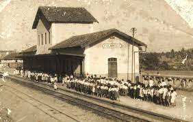

Palmares é um município brasileiro do estado de Pernambuco. Localiza-se na região da Mata Sul do estado de Pernambuco.É conhecido como "Atenas Pernambucana", "Capital da Mata Sul" e "Terra dos Poetas",por ser o berço de ilustres e renomados poetas, romancistas, teatrólogos, jornalistas, médicos, religiosos, advogados, políticos, militares, artistas, músicos e etc.,os quais ajudaram a projetar o município no restante do País.Trata-se de uma cidade bastante tradicional e muito importante na história do Estado de Pernambuco.Seu nome é também uma homenagem ao Quilombo dos Palmares,que se instalou no seu entorno e resistiu durante muito tempo sob o comando de Zumbi.
